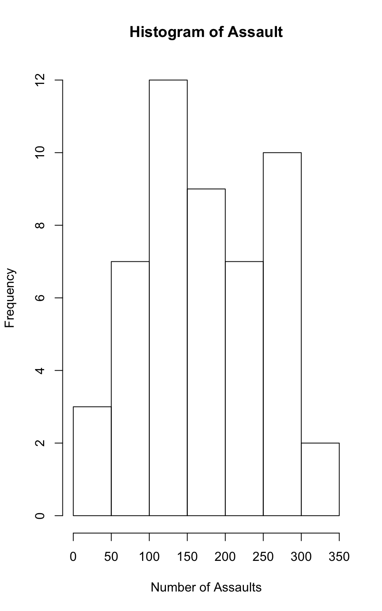

Assignments
library('maps')
library('ggplot2')
library('dplyr')
library(datasets)Assignment 1
Collaborators: w/ Sophia Restaino
This assignment is due on Canvas on Monday 9/20 before class, at 10:15 am. Include the name of anyone with whom you collaborated at the top of the assignment.
Problem 1
Install the datasets package on the console below using install.packages("datasets"). Now load the library.
library(datasets)Load the USArrests dataset and rename it dat. Note that this dataset comes with R, in the package datasets, so there’s no need to load data from your computer. Why is it useful to rename the dataset?
dat <- USArrests
dat.untouched <- datIt is useful to rename the dataset so that you are able to keep track of your own datasets that you will be working with on your project. When working with many datasets, it might get confusing regarding which version of the data you are using (ie. if there is any manipulation to the data involved). Best practices involve making an untouched version so you can relook at the original data.
Problem 2
Use this command to make the state names into a new variable called State.
dat$state <- tolower(rownames(USArrests))This dataset has the state names as row names, so we just want to make them into a new variable. We also make them all lower case, because that will help us draw a map later - the map function requires the states to be lower case.
List the variables contained in the dataset USArrests.
names(dat)## [1] "Murder" "Assault" "UrbanPop" "Rape" "state"Problem 3
What type of variable (from the DVB chapter) is Murder?
?USArrestsAnswer: Murder is a quantitative variable because it is a numerical value with units. It measures the number of murder arrests in each state (per 100,000) in 1973.
What R Type of variable is it?
class(dat$Murder)## [1] "numeric"Answer: The R type of variable is “numeric” as shown by the output of the code above.
Problem 4
What information is contained in this dataset, in general? What do the numbers mean?
Answer: This dataset is looking at the types of arrests in 1973 per 100,000 people in the 50 states. There are 50 rows (the states) and 4 main variables we are looking at, including murder, assault, urban population percentages, and rape arrests.
Problem 5
Draw a histogram of Murder with proper labels and title.
hist(dat$Murder,
main = "Histogram of Murders",
xlab = "Number of Murders",
ylab = "Frequency",
xlim = c(0,20),
ylim = c(0,15))
Problem 6
Please summarize Murder quantitatively. What are its mean and median? What is the difference between mean and median? What is a quartile, and why do you think R gives you the 1st Qu. and 3rd Qu.?
mean(dat$Murder)## [1] 7.788median(dat$Murder)## [1] 7.25summary(dat$Murder)## Min. 1st Qu. Median Mean 3rd Qu. Max.
## 0.800 4.075 7.250 7.788 11.250 17.400The mean shows the average amount of murders per 100,000 residents for each state. The median reports the number for the state that is in the middle of the other numbers in the dataset. Between the 1st quartile, median, 3rd quartile, and the max, we are able to see enough of the the data distribution that we need. 1st quartile shows that 25% of the state’s numbers reported are below 4.075 and the 3rd quartile shows that the 50.1%-75% are between 7.25-11.25.
Problem 7
Repeat the same steps you followed for Murder, for the variables Assault and Rape. Now plot all three histograms together. You can do this by using the command par(mfrow=c(3,1)) and then plotting each of the three.
max(dat$Assault)## [1] 337hist(dat$Assault,
main = "Histogram of Assault",
xlab = "Number of Assaults",
ylab = "Frequency",
xlim = c(0,350),
ylim = c(0,12))
max(dat$Rape)## [1] 46hist(dat$Rape,
main = "Histogram of Rape",
xlab = "Number of Rapes",
ylab = "Frequency",
xlim = c(0,50),
ylim = c(0,12))
What does the command par do, in your own words (you can look this up by asking R ?par)?
?parAnswer: Par allows you to set graphical parameters. An example of using par can be seen below in which I used par to put graphs together to be seen side by side. You can use it to put, for example, 3 side by side or 3 on top of each other.
What can you learn from plotting the histograms together?
par(mfrow=c(3,1))
hist(dat$Murder,
main = "Histogram of Murders",
xlab = "Number of Murders",
ylab = "Frequency",
xlim = c(0,20),
ylim = c(0,15))
hist(dat$Assault,
main = "Histogram of Assault",
xlab = "Number of Assaults",
ylab = "Frequency",
xlim = c(0,350),
ylim = c(0,12))
hist(dat$Rape,
main = "Histogram of Rape",
xlab = "Number of Rapes",
ylab = "Frequency",
xlim = c(0,50),
ylim = c(0,12))Answer: You are able to compare the frequencies of the assaults, murders, and rape all togehter at once. It is an easy way to display the data.
Problem 8
In the console below (not in text), type install.packages("maps") and press Enter, and then type install.packages("ggplot2") and press Enter. This will install the packages so you can load the libraries.
Run this code:
ggplot(dat,
aes(map_id=state, fill=Murder)) +
geom_map(map=map_data("state")) +
expand_limits(x=map_data("state")$long, y=map_data("state")$lat)What does this code do? Explain what each line is doing.
Answer: We are making a map with the murder data, plotting the different murder rates across each state. The first line of this code is calling the maps package. The second line calls the ggplot2 package which allows you to make different kinds of graphs, similar to baseR plot functions. So, when making the map, “ggplot” is the function, “dat” is the dataset we are pulling information from, and “aes” is responsible for setting the aesthetics of the map we are making. “fill” is telling R that we want the aesthetics to be filled with the data from the “Murder” column. After this, the “+” tacks on the map that is actually being made, using the “state” data. After this, “expand_limits” helps us put the latitude and longitude ticks on the visualization, behind the map.
Assignment 2
Problem 1: Load Data
Read in the data
library(dplyr)
nsduh <- read.csv("dat.nsduh.small.1.csv")
nsduh.untouched <- nsduh
names(nsduh)## [1] "mjage" "cigage" "iralcage" "age2" "sexatract" "speakengl"
## [7] "irsex"Dimensions of the dataset
dim(nsduh)## [1] 171 7Problem 2: Variables
Describe the variables in the dataset. What is this dataset about? Who collected the data, what kind of sample is it, and what was the purpose of generating the data?
This dataset is a survey collecting information on people’s tendency/history of using marijuana, cigarettes, and alcohol. There are also some demographics/personal information collected, such as the respondent’s age, sex, and sexual attraction. This information is all compiled by the National Survey on Drug Use and Health in order to analyze substance use across the nation.
Problem 3: Age and gender
What is the age distribution of the sample like? Make sure you read the codebook to know what the variable values mean. Do you think this age distribution representative of the US population? Why or why not?
class(nsduh$age2)## [1] "integer"mean(nsduh$age2)## [1] 13.97661median(nsduh$age2)## [1] 15hist(nsduh$age2,
main = "Histogram of Ages",
xlab = "Age Buckets",
ylab = "Frequency",
xlim = c(0,20))According to this histogram, along with the information on the value meanings in the codebook, most of the respondents for this survey answered 15. This indicates that they are between 35-49 years old. This survey took people who were at least 12 years old, but compared to the other age buckets, younger people were not as represented. This makes sense, as the data was collected through a survey, so slightly older people were probably more likely to interact with it. I think this is somewhat reflective of the national population, but I would probably want a larger sample size just to be as accurate as possible. A quick google search shows that in 2019, the average age of a person was 38.1 years old. The average age of respondents in this survey was roughly between 26-29 years old. Thus, this information shows that the survey is slightly on the younger side and could use more respondents to be more reflective of the national population.
Is the sample balanced in terms of gender? If not, are there more females or males?
nsduh %>%
count(irsex)## irsex n
## 1 1 91
## 2 2 80It is decently balanced. There are 91 males and 80 females.
Use this code to draw a stacked bar plot to view the relationship between sex and age. What can you conclude from this plot?
tab.agesex <- table(nsduh$irsex, nsduh$age2)
min(nsduh$age2)## [1] 4barplot(tab.agesex,
main = "Stacked barchart",
xlab = "Age category", ylab = "Frequency",
legend.text = rownames(tab.agesex),
beside = FALSE) # Stacked bars (default) This barchart allows us to see the gender breakdown per age bucket in the survey. For example, we are able to see that for those who are in the “15” age bucket, the respondents are pretty evenly split between males and females. We are also able to see instances in which the age buckets are heavily dominated by female or male respondents. For the 17 and 18 year olds (buckets 6 nd 7), according to the graph, most respondents also reported that they are male. For the 19 year old respondents (bucket 8), many reported that they are female, rather than males. Overall, most of the age buckets are decently even between female and male respondents.
This barchart allows us to see the gender breakdown per age bucket in the survey. For example, we are able to see that for those who are in the “15” age bucket, the respondents are pretty evenly split between males and females. We are also able to see instances in which the age buckets are heavily dominated by female or male respondents. For the 17 and 18 year olds (buckets 6 nd 7), according to the graph, most respondents also reported that they are male. For the 19 year old respondents (bucket 8), many reported that they are female, rather than males. Overall, most of the age buckets are decently even between female and male respondents.
Problem 4: Substance use
For which of the three substances included in the dataset (marijuana, alcohol, and cigarettes) do individuals tend to use the substance earlier?
sum(min(nsduh$mjage))## [1] 7sum(min(nsduh$cigage))## [1] 10sum(min(nsduh$iralcage))## [1] 5Individuals tend to use alcohol at an earlier age than compared to when they would use marijuana or cigarettes.
Problem 5: Sexual attraction
What does the distribution of sexual attraction look like? Is this what you expected?
nsduh$sexna <- nsduh$sexatract
nsduh$sexna[nsduh$sexatract == 85 | nsduh$sexatract == 94 | nsduh$sexatract == 97 |
nsduh$sexatract == 98 | nsduh$sexatract == 99] <- NA
length(nsduh$sexna[nsduh$sexna == "NA"])## [1] 3hist(nsduh$sexna,
main = "Histogram of Sexual Attraction",
xlab = "Age Buckets",
ylab = "Frequency",
xlim = c(1,6))First, I excluded people on the survey who skipped this question, did not answer, didn’t know, or refused this question. I found that in this dataset, this only applied to 3 people, so I felt comfortable excluding them without much harm to the strength of the data. An overwhelming majority of the people who took this survey are straight, as in they are only attracted to people of the opposite sex. The second most popular response was that people are mostly attracted to people of the opposite sex. People who are bi was the next most common answer, followed by people who are mostly attracted to the same sex, and finally people who are only attracted to the same sex. The least common response was people who are not sure. This is what I expected, and I think this data is representative of the greater population.
What is the distribution of sexual attraction by gender?
tab.gensex <- table(nsduh$irsex, nsduh$sexna)
barplot(tab.gensex,
main = "Stacked barchart",
xlab = "Sexual Attraction Category", ylab = "Frequency",
legend.text = rownames(tab.gensex),
beside = FALSE) # Stacked bars (default)Most females and males who took the survey are straight. Women are more likely to report that they are mostly attracted to the opposite sex and are equally attracted to males and females than the other male respondents.
Problem 6: English speaking
What does the distribution of English speaking look like in the sample? Is this what you might expect for a random sample of the US population?
speakengl <- nsduh$speakengl
engl.freq <- table(speakengl)
barplot(engl.freq,
ylim = c(0,200))Most of the people who took the survey are able to speak english very well. This is followed by those who said they can speak english well, followed by those who said they can’t speak english very well. This is not surprising as a random sample of the US because most people are able to speak english very well; however, there are people who can speak english, but not as their first language. This might cause their english to not be as strong, so it makes sense that the survey responses are reflective of this factor.
Are there more English speaker females or males?
tab.genengl <- table(nsduh$speakengl, nsduh$irsex)
barplot(tab.genengl,
main = "Stacked barchart",
xlab = "Age category", ylab = "Frequency",
legend.text = rownames(tab.genengl),
beside = FALSE,
ylim = c(0,100)) # Stacked bars (default)There are more english speaking males. This might be caused by a few factors with one of the more obvious being that more males took the survey than females, so it makes sense that, in looking at pure frequency, they might have more people answer that they can speak english well.